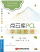
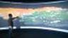
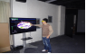
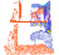

应聘职位：具有从事三维信息获取与处理等方面的研究工作积累，从事“农业信息获取技术与空间大数据分析”方向的科研
研究领域：空间点云数据获取、处理（三维重建、海量空间点云数据分析），及在农业动植物3D表型测度上的应用
郭 浩（Guo Hao）
| 最高学历：博士（农业信息化技术） | 留学经历：联合培养博士（1年） |
| 邮箱：guohaolys@cau.edu.cn | 电话:+86-13426384870 |
| 地址: 北京市海淀区清华东路17号，中国农业大学信息与电气工程学院531室，100083 | |
| 2011-现在 | 博士生 | 农业信息化技术 | 中国农业大学 | (指导老师: 朱德海 研究动物形态表型3D数据获取、处理以及海量点云可视化分析) |
| 2013-2014 | 联合培养博士 | 计算机科学与技术 | 斯蒂文斯理工学院 | (指导老师：Philippos Mordohai 研究海量空间点云数据分割) |
| 2008-2011 | 硕士 | 农业电气化与自动化 | 昆明理工大学 | (指导老师:戈振扬 研究植物构型3D数据获取、处理方法以及农业应用) |
| 2004-2008 | 本科 | 农业工程专业 | 昆明理工大学 | (优秀毕业生 以2.6%比例免推上研究生) |
| 科研情况 | |
|---|---|
| 著作: | |
|
 |
| 论文(共16篇，第一作者9篇,内容都与小尺度空间点云数据获取、处理、可视化及表型测度有关): | |
| 郭 浩,马 钦,张胜利,等.基于三维重建的动物体尺获取原型系统[J].农业机械学报,2014,45(5):227-232. （EI期刊） |  |
| 郭 浩,张胜利,马钦,等.基于点云采集设备的奶牛体尺指标测量[J].农业工程学报,2014,30(5):116-122.（EI期刊） | |
| 郭 浩, 朱德海, 戈振扬, 等. 植物立体可视化模拟系统原型 StereoPlants 的构建[J]. 农业工程学报, 2012, (15): 113-117. （EI期刊） |  |
| Hao Guo, Dehai Zhu, Philippos Mordohai. Non-rigid Point Cloud Registration with Automatic Part Discovery[J]. Computer Graphics Forum, 2014 （SCI期刊） |  |